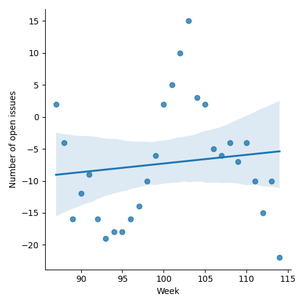
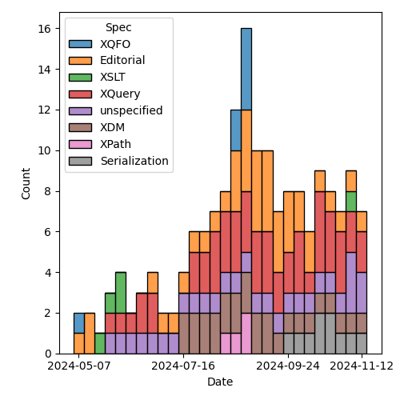
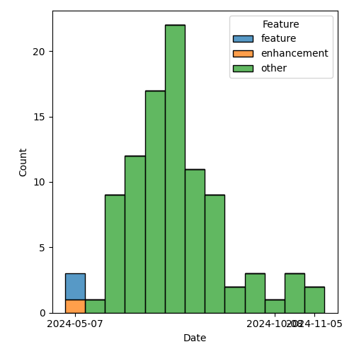

QT4 CG Meeting 099 Minutes 2024-11-19
Meeting index / QT4CG.org / Dashboard / GH Issues / GH Pull Requests
Table of Contents
Minutes
Approved at meeting 100 on 26 November 2024.
Summary of new and continuing actions [0/9]
[ ]QT4CG-080-07: NW to update the build instructions in the README[ ]QT4CG-082-02: DN to work with MK to come to agreement on the fn:ranks proposal[ ]QT4CG-088-01: NW to consider how best to add a dedication to MSM.[ ]QT4CG-088-04: [Someone] needs to update the processing model diagram needs vis-a-vis the static typing feature[ ]QT4CG-089-01: CG to draft a PR that attempts to resolve the operators described in #755 to a smaller number of orthogonal choices.[ ]QT4CG-097-02: MK to make the XSD schema component references into links to XSD[ ]QT4CG-097-03: DN to proposal an axis for accessing the siblings of a node.[ ]QT4CG-098-02: NW to look at the XSL stylesheet for XSD, #374.[ ]QT4CG-099-01: MK to add a default layout option for elements-to-map.
1. Administrivia
1.1. Roll call [10/12]
DB gives regrets.
[ ]David J Birnbaum (DB)[X]Reece Dunn (RD)[ ]Sasha Firsov (SF)[X]Christian Grün (CG)[X]Joel Kalvesmaki (JK)[X]Michael Kay (MK)[X]Juri Leino (JLO)[X]John Lumley (JWL)[X]Dimitre Novatchev (DN)[X]Wendell Piez (WP)[X]Ed Porter (EP)[X]Norm Tovey-Walsh (NW). Scribe. Chair.
1.2. Accept the agenda
Proposal: Accept the agenda.
Accepted.
1.2.1. Status so far…
These charts have been adjusted so they reflect the preceding six months of work.

Figure 1: “Burn down” chart on open issues

Figure 2: Open issues by specification

Figure 3: Open issues by type
1.3. Approve minutes of the previous meeting
Proposal: Accept the minutes of the previous meeting.
- JLO: The last few paragraphs should refer to EXPath and EXQuery, not XPath and XQuery
Accepted, as amended.
1.4. Next meeting
This next meeting is planned for 26 November.
DB, JLO gives regrets for 26 November.
The CG does not plan to meet on 24 or 31 December.
1.5. Review of open action items [1/9]
(Items marked [X] are believed to have been closed via email before this agenda was posted.)
[ ]QT4CG-080-07: NW to update the build instructions in the README[ ]QT4CG-082-02: DN to work with MK to come to agreement on the fn:ranks proposal[ ]QT4CG-088-01: NW to consider how best to add a dedication to MSM.[ ]QT4CG-088-04: [Someone] needs to update the processing model diagram needs vis-a-vis the static typing feature[ ]QT4CG-089-01: CG to draft a PR that attempts to resolve the operators described in #755 to a smaller number of orthogonal choices.[ ]QT4CG-097-02: MK to make the XSD schema component references into links to XSD[ ]QT4CG-097-03: DN to proposal an axis for accessing the siblings of a node.[X]QT4CG-098-01: NW to update the Relax NG grammar for XSLT 4.0[ ]QT4CG-098-02: NW to look at the XSL stylesheet for XSD, #374.
1.6. Review of open pull requests and issues
1.6.1. Blocked
1.6.2. Merge without discussion
The following PRs are editorial, small, or otherwise appeared to be uncontroversial when the agenda was prepared. The chairs propose that these can be merged without discussion. If you think discussion is necessary, please say so.
- PR #1585: Update RELAX NG grammar for XSLT
- PR #1582: 767 Fix reference to HTML5 spec
- PR #1581: 69 Add default for current-merge-group $source
- PR #1580: 1462 Change default for deep-equal options
- PR #1578: 1493 Expand the rules for handling numbers in xml-to-json
- PR #1576: 1574 Mark some productions as XQuery only
- PR #1573: 1552 Change fn:siblings to include self in all cases
Proposal: merge these PRs without discussion.
Accepted.
1.6.3. Close without action
It has been proposed that the following issues be closed without action. If you think discussion is necessary, please say so.
- Issue #1349: Nothing
- Issue #421: Make sure the build system syntax checks the syntax of examples
- Issue #92: Simplify rule for attribute values on Extension Instructions used to invoke named templates
Proposal: close these issues without further action.
Accepted.
2. Technical agenda
2.1. PR #1575: 528bis element to map
See PR #1575.
MK introduces the PR; there was substantial discussion last time, this is an attempt to apply comments from that discussion to the current spec.
- MK: The requirement is to convert XML to JSON in a way that can handle any
XML, unlike the current function that’s limited to a specific format.
- … It now generates a map that can be serialized as JSON
- … The resulting JSON should be intuitive and easy to use
- … And it should be consistent and stable; which is a conflicting requirement.
- … A great deal of the design about how to reconcile that conflict.
- … The conversion is not lossless and is not streamable.
- MK: We start with a set of patterns and their equivalents in JSON.
- … The patterns are called “layouts”.
- … The re are four different ways to select a layout:
- Explicitly in an options parameter
- Inferred from the schema-annotation (if it has one)
- Based on the properties of the actual element instance
- If
uniformis true, all elements with the same name get the same mapping. (This requires a pre-scan of the data.)
- MK: The notation for layouts is introduced.
- MK: The mapping is designed to be error free; if you select a layout that doesn’t match your data, you’ll still get something back.
MK walks through the layouts in the PR.
- MK: I’ve tried it on a bunch of examples, and the default results are pretty good.
- JWL: Are there wildcard possibilities in the layout map?
- MK: Not yet, but it could be done.
- JWL: How would you do “all empty”?
- MK: You’d need to enumerate them all.
ACTION: QT4CG-099-01: MK to add a default layout option.
- JLO: Can I filter out things I don’t want?
- MK: The fallback representation will have the effect of losing data, but
filtering isn’t one of the requirements of objectives.
- … The idea is that if you really want to do a transformation, you can do it before or after.
Some discussion of precedence.
- MK: If you’re choosing based on the match predicate, there’s an implicit order based on the order in the specification.
- JLO: I’d prefer it if this was more explicit in the specification.
Some discussion of when element names are omitted from the output.
- CG: I think about a year ago I implemented the first version, but what’s different?
- MK: I had to do a complete rewrite because I was previously writing directly
to a JSON string.
- … All the output generation was rewritten, but the logic for choosing a layout is pretty much the same.
- CG: There are not so many things that have changed perhaps?
It’s not entirely clear what has changed.
- CG: I really like the proposal.
- MK: There’s a comprehensive set of tests.
- CG: It’s definitely an improvement to have this in the specification. We can fine tune later.
Some discussion of merging some of the layouts.
- RD: With JSON-LD, there’s a context block that lets you define namespaces. So you can use the compact IRI form. I wonder if it’s possible to add support for that.
- MK: I haven’t looked at that at all.
- DN: I think this is good progress. The previous version wasn’t satisfactory to me. I have questions.
- Now we have elements-to-map, will we also need a map-to-elements function?
- I think there are too many options to remember; it would be good to have a more general option.
- I think data loss should always raise errors; we could have an option to turn that behavior off
- Why is the conversion not lossless? Can’t we have some sort of layout where there is a lossless conversion?
- Why is there a JSON equivalent when the result is a map. Shouldn’t this be named map equivalent?
- … Otherwise, this prescribes the serialization
- What is the difference between empty string and null and empty map?
- … Bearing in mind that
nullis only for JSON not for maps.
- … Bearing in mind that
- MK: They’re all good points! They’re all points on which you have to make a design decision.
- … The point about being lossless is a conflict between being lossless and error free.
- … The point about having lots of options to remember is important as well.
- … On a lot of simple XML, you get good results with just the default options. I think the typical mode of use will be to try it with defaults and stick with that. But we don’t want to lose the cases where some intervention is needed.
- DN: I meant that the typical user will just give up when they look at the description of this function.
Some discussion of usability and marketability of the functions in a specification.
- JK: I agree with everything that’s been said. Excellent function. I like the
initial preamble that sets expectations. JWL reminded me that it would be good
for the premable to say what happens to comments, processing instructions, and
namespace nodes.
- … It would be good to have some examples where the strings have reserved characters in XML or JSON.
- MK: On the whole, special characters aren’t particularly a problem because we’re producing maps, not a serialized form.
- WP: Yes, I like this too. The match predicate is a boolean test?
- MK: In the original draft, it was an XSLT match pattern. I think it’s a lot simpler this way.
- WP: I think we should also have a couple of examples that show how you would emulate a pattern, such as a self test or an element test…
- MK: No, these patterns are fixed, you can’t change them.
- JWL: Am I correct that mixed layout is lossless, ignoring comments and processing instructions?
- MK: Yes, I think so, subject to the way the internal elements is handled.
Some discussion of lossless. Even in the mixed case, you could use namespaces.
- JWL: Are there ways to make it lossless?
- MK: Yes, I think in terms of the XDM content, that might be possible.
- … One thing that’s always lost unconditionally is in-scope namespaces!
- JLO: What about streamability? Is uniform=true the only thing that keeps us from streaming?
- MK: No, even on an instance-by-instance case, the list layout requires lookahead.
- JLO: Could you have streamability?
Some discussion, “maybe.”
- MK: It would be nice to have this separate from XPath and XQuery and XSLT.
- DN: As several of us have discussed, lossless conversion is really important.
Perhaps an adaptive strategy could work: mixed or record. Lossless should be
the default.
- … Unreferenced namespaces will be lost so it can’t really be called lossless.
- … Maybe we can define a term like “equivalent” to cover this case.
- … A “visually lossless conversion” should be a requirement.
- NW: The formatting is awkward, the tables appear to be too wide. A line break in the JSON example in the record layout would help.
Proposal: Accept this PR.
Accepted.
- WP: Is this something that can be implemented in XSLT?
- … I think round tripping is also related to lossless conversion.
- MK: There’s an obvious inversion function of maps-to-elements that we could consider.
- … I don’t think it’s round trippable though, you won’t be able to infer the same patterns of data.
- NW: You lose the list item type.
2.2. PR #1577: 1491 Empty record types
See PR #1577.
- MK introduces the PR and walks through the XQuery changes.
- MK: We have overlapping text in Functions and Operators about constructor
functions and we had failed to change a few things.
- … The constructor functions in F&O now point to the prose in XQuery.
- JWL: Does that mean that you can’t use this in XSLT?
- MK: I’m anticipating that we’ll have
<xsl:record>in XSLT that’s equivalent.
Proposal: Accept this PR.
Accepted.
3. Any other business
None heard.